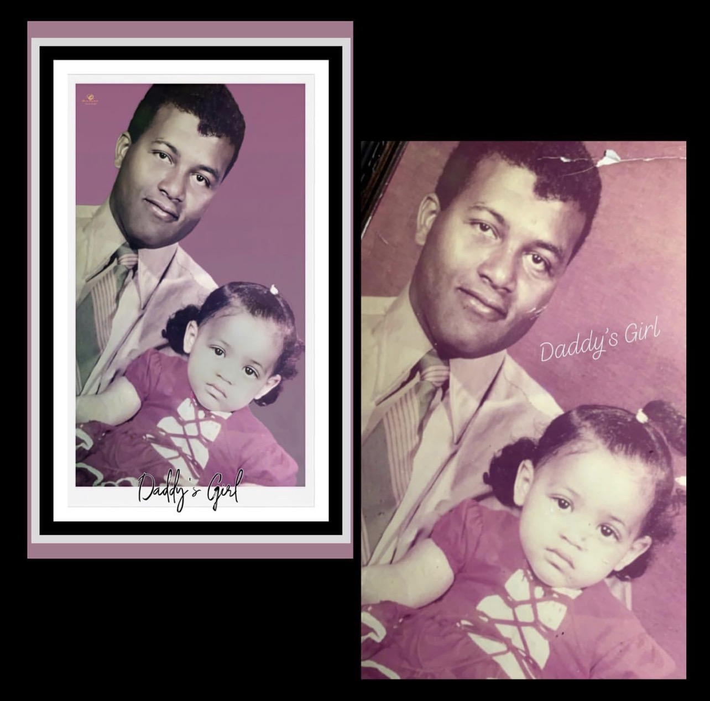

Restoration Examples



Bring your old memories back to life
Each photograph is carefully restored by hand to preserve the authenticity and emotion of the original image.
This service specializes in restoring mild to moderately damaged photographs, including:
Photos with severe damage, missing sections, or major reconstruction may require a consultation before the restoration can be accepted.
If a photo falls outside the mild-to-moderate category, you will be contacted to discuss the restoration options before work begins.
